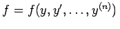
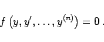
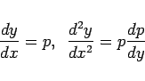
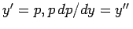
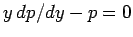
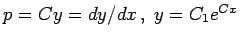

Inhalt Index DeskTop Bronstein

 Differentialgleichungen Gewöhnliche Differentialgleichungen Differentialgleichungen höherer Ordnung und Systeme von Differentialgleichungen Erniedrigung der Ordnung
Differentialgleichungen Gewöhnliche Differentialgleichungen Differentialgleichungen höherer Ordnung und Systeme von Differentialgleichungen Erniedrigung der Ordnung


, d.h., x tritt nicht explizit auf:
|  | (9.29a) |
Durch die Substitution
|  | (9.29b) |
kann die Ordnung der Differentialgleichung von n auf (n-1) reduziert werden.
| Beispiel |
|
Die Verringerung der Ordnung um 1 erfolgt für die Differentialgleichung yy''-y'2=0 mit der Substitution , die auf yp dp/dy - p2 = 0 und  führt und damit auf . Durch Kürzung mit p geht keine Lösung verloren, da p = 0 die Lösung y = C1 liefert, die in der allgemeinen Lösung für C = 0 enthalten ist. |